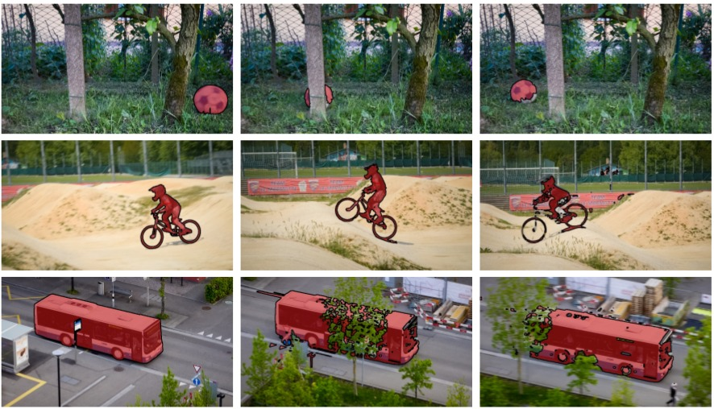
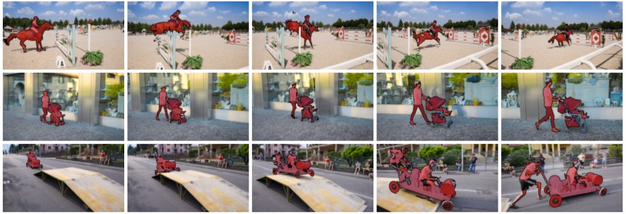

Bilateral Space Video Segmentation
1Nicolas Märki 1,2Federico Perazzi 3Oliver Wang 2Alexander Sorkine-Hornung
1ETH Zurich 2Disney Research Zurich 3Adobe Systems Inc.

Figure 1. Example results of our bilateral space video segmentation which automatically propagates a user provided mask on the first frame (left column) through the complete video (remaining columns). Thanks to the efficiency of our method, errors in the later frames can be easily fixed in an interactive manner.
Abstract
In this work, we propose a novel approach to video segmentation that operates in bilateral space. We design a new energy on the vertices of a regularly sampled spatio-temporal bilateral grid, which can be solved efficiently using a standard graph cut label assignment. Using a bilateral formulation, the energy that we minimize implicitly approximates long-range, spatio-temporal connections between pixels while still containing only a small number of variables and only local graph edges. We compare to a number of recent methods, and show that our approach achieves state-of-the-art results on multiple benchmarks in a fraction of the runtime. Furthermore, our method scales linearly with image size, allowing for interactive feedback on real-world high resolution video.

Figure 6. Qualitative video segmentation results from three sequences of DAVIS [26] (horsejump, stroller and soapbox). The segmentation is computed non-interactively, given the first frame as initialization. Our method demonstrates robustness to challenging scenarios such as complex objects, fast-motion, and occlusions.
Introduction
A crucial aspect of semi-automatic video segmentation methods is responsiveness. A user expects instant feedback, and any computation delays present significant challenges to the adoption of these technologies. This is one of the key reasons that segmentation related tasks, such as rotoscoping, form the bulk of manual labor, and therefore associated costs, of video effects. In this work, we present a highly efficient method for user-guided video segmentation that is able provide iterative feedback in a fraction of the time of previous approaches, while still generating high quality results in semi-supervised applications, as demonstrated on multiple benchmarks. We accomplish this by performing the segmentation in “bilateral space”, which is a high dimensional feature space, originally proposed for accelerated bilateral filtering, and recently extended to computing depth from stereo triangulation. We describe a novel energy on a “bilateral grid”, a regular lattice in bilateral space, and infer labels for these vertices by minimizing an energy using graph cuts. Processing on the bilateral grid has several advantages over other approaches. First, the regular and data-independent structure allows for a more efficient mapping from image to bilateral space (and vice versa) than super-pixels or k-means clustering approaches. Second, it allows for flexible interpolation schemes that lead to soft assignments of pixels to multiple intermediate variables. And finally, a bilateral representation allows us to infer labels on a simple, locally connected graph, while still enforcing large spatio-temporal neighborhood regularization, which would be intractable to solve directly. We show that the combination of these advantages significantly improves segmentation quality, and importantly, allows us to segment video data, generating temporally consistent results with robustness to object and camera motion.
Update: [ Data ] available for download now includes results from DAVIS, SegTrackv2 and YouTubeObjects dataset.
Citation - BibTeX
Bilateral Space Video Segmentation
Nicolas Märki, Federico Perazzi, Oliver Wang, Alexander Sorkine-Hornung
CVPR 2016, Las Vegas, USA.
[ PDF ]
[ Data ]
[ Code ]
[ Poster ]
[ BibTeX ]